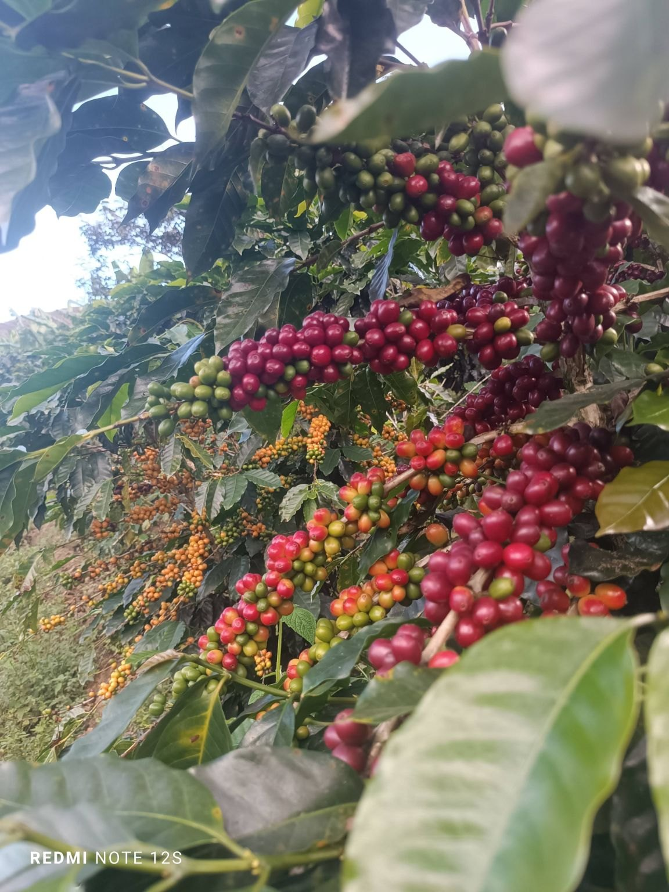
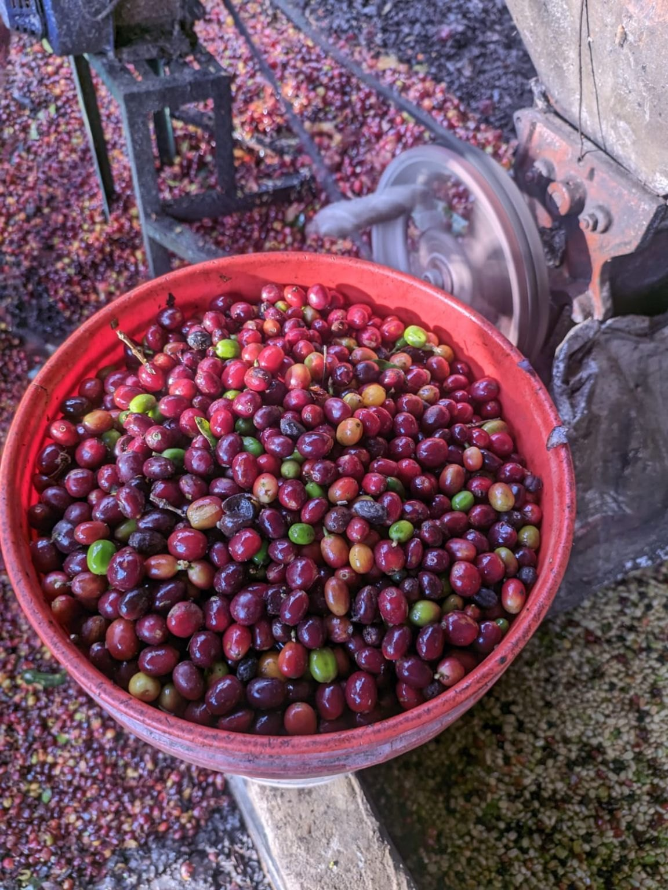
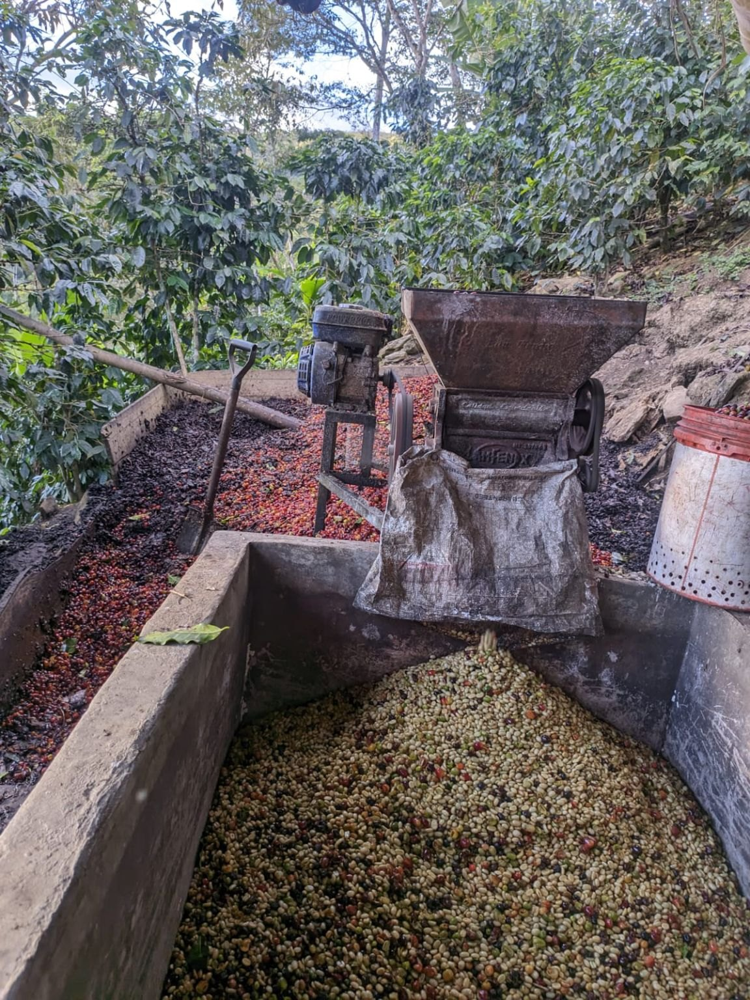

Conoce la cultura cafetalera de Lonya Grande y el trabajo de sus productores. Las visitas a fincas deben coordinarse previamente.
Conoce el proceso del café, de la finca a la taza
Sembrar y cuidar
El cultivo comienza con plantas jóvenes que requieren tiempo y atención. La altitud, el suelo y el clima, junto con la variedad y el manejo, influyen en la calidad de la taza.
Crecer y producir
Los cafetales son parte del paisaje y del sustento familiar. En cada rama se aprecia cómo maduran los frutos.

Recolectar y despulpar
Tras la cosecha, el despulpado separa la pulpa del grano. La selección y el cuidado del procesamiento ayudan a preservar la calidad.


Del tostado a la degustación
Experiencias por desarrollar con los productores; coordina cualquier visita antes de viajar.
Consultar sobre el café por WhatsApp